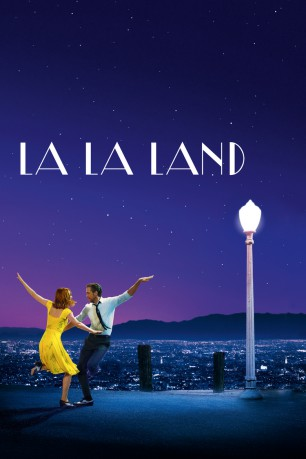

#5967 La La Land
Auszeichnungen: 6 Oscars gewonnen für 8 Oscars nominiert 12 GoldenGlobes gewonnen 5 BAFTA-Awards gewonnen
 gesehen am 17.04.2017
gesehen am 17.04.2017
 
 IMDB-Wertung: 8.4 / 10
IMDB-Wertung: 8.4 / 10  Tomatometer: 91
Tomatometer: 91  Metascore: 0
Metascore: 0 
Mia, eine aufstrebende Schauspielerin, serviert Filmstars Café Latte zwischen ihren Vorsprechen. Sebastian, der Jazzmusiker, kratzt sich etwas Geld zusammen indem er in dreckigen Bars spielt. Doch während sich der Erfolg einstellt, werden die Beiden mit Entscheidungen konfrontiert, die ihre Liebesaffäre belasten. Die Träume, zu denen sie sich gegenseitig ermutigt haben, drohen sie nun auseinander zu reißen.
Jahr: 2016
Dauer: 127 Minuten
FSK: 0
Land: USA Studio: LionsgateTonspuren:
Untertitel: Deutsch, Englisch,
Auflösung: 1080p (1920x752) Größe: 11161 MB
Genre: Drama, Musik, Komödie, Liebe, Musical
Regisseur: Damien Chazelle
Drehbuch: Homer H. Hickam Jr.
Soundtrack:
Darsteller:
 Ryan Gosling als Sebastian
Ryan Gosling als Sebastian Emma Stone als Mia
Emma Stone als Mia Terry Walters als Linda, Coffee Shop Manager
Terry Walters als Linda, Coffee Shop Manager- Thom Shelton als Coffee Spiller
 Cinda Adams als Casting Director, First Audition
Cinda Adams als Casting Director, First Audition Callie Hernandez als Tracy
Callie Hernandez als Tracy Jessica Rothe als Alexis
Jessica Rothe als Alexis Sonoya Mizuno als Caitlin
Sonoya Mizuno als Caitlin Rosemarie DeWitt als Laura
Rosemarie DeWitt als Laura J.K. Simmons als Bill
J.K. Simmons als Bill- Claudine Claudio als Karen, Waitress
- Jason Fuchs als Carlo
- Trevor Lissauer als Valet
- Olivia Hamilton als Bree, Gluten Free Girl
- Anna Chazelle als Sarah, Pilot Casting Assistant
 Finn Wittrock als Greg
Finn Wittrock als Greg Josh Pence als Josh
Josh Pence als Josh- Nicole Coulon als Josh's Fiancée
 Damon Gupton als Harry
Damon Gupton als Harry- John Legend als Keith
- Kaveh Rastegar als Tom
- Briana Lee als Echo Backup Singer
 David Douglas als Radio DJ
David Douglas als Radio DJ- Miles Anderson als Alistair, Photographer
- Bobo Chang als Photographer's Assistant
 Meagen Fay als Mia's Mom
Meagen Fay als Mia's Mom- John Hindman als Frank, Director
- Valarie Rae Miller als Amy Brandt
- Nicole Wolf als Amy Brandt's Assistant
- Corrin Evans als New Barista
 Kiff VandenHeuvel als New Coffee Shop Manager
Kiff VandenHeuvel als New Coffee Shop Manager Tom Everett Scott als David
Tom Everett Scott als David- Zoë Hall als Chelsea
- Dempsey Pappion als Seb's Jazz Club Employee
- Reshma Gajjar als Traffic Dancer - Girl #1
- Damian Gomez als Traffic Dancer - 2nd Man
- Candice Coke als Traffic Dancer - Girl #2
- Cindera Che als Traffic Dancer
- Tiffany Daniels als Traffic Dancer
 Bubba Dean Rambo als Traffic Dancer
Bubba Dean Rambo als Traffic Dancer- Nick Drago als Traffic Dancer
- Marissa Labog als Traffic Dancer
 Chris Moss als Traffic Dancer
Chris Moss als Traffic Dancer- Clarice Ordaz als Traffic Dancer
- Nathan Prevost als Traffic Dancer
- Melinda Sullivan als Traffic Dancer
- Nick Baga als Hollywood Party Dancer - Agent #3
- Scott Hislop als Hollywood Party Dancer - Creepy Guy
 Krystal Ellsworth als Hollywood Party Dancer
Krystal Ellsworth als Hollywood Party Dancer- Morgan Larson als Hollywood Party Dancer
Datei: X:\2016(G-M)\La La Land (2016, FSK0, 1920x752).mkv seit 14.04.2017
Festplatte: HD 2016(A-Z)
 Es gibt insgesamt 164 Filme in der Gruppe '2016(G-M)'
Es gibt insgesamt 164 Filme in der Gruppe '2016(G-M)'